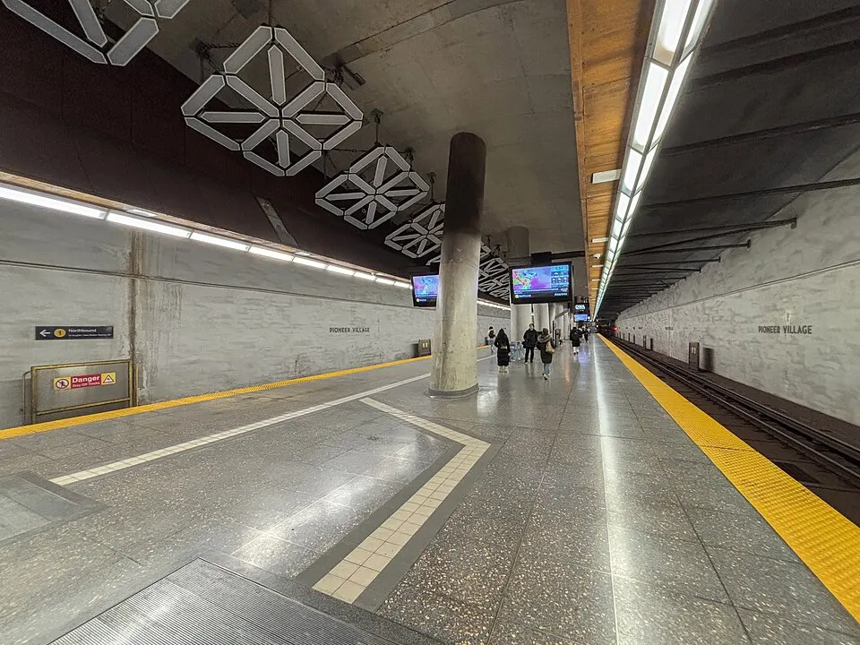

Signal
SignalStation atlas / Pioneer Village
Station history
Pioneer Village


Station history
Contractors handed the station to the TTC for testing. The complex included twelve TTC bus bays on the Toronto side and five regional bays on the Vaughan side.
Passengers first boarded beneath Steeles Avenue, the Toronto–Vaughan boundary. Entrances served bus terminals on opposite sides of the municipal line.